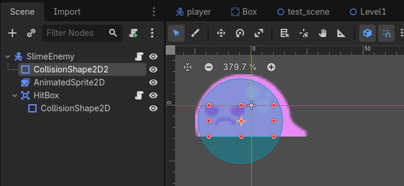
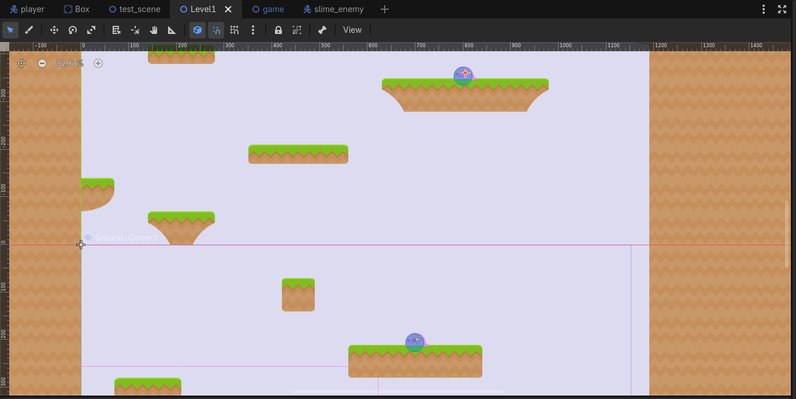

Section 5 of 7
Next Section →

Section 5: Enemy Scene with Animation & Patrol
Create an animated enemy that patrols back and forth, adding challenge to your platformer levels.
Section Progress: 0%
1
Creating the Enemy Scene
We'll use CharacterBody2D for our enemy so it can interact with physics and detect collisions.
- Press Ctrl + N to create a new scene
- Add a CharacterBody2D as the root node
- Rename it to "Enemy"
- Save the scene as "enemy.tscn"
Adding Visuals and Collision
- Add an AnimatedSprite2D as a child
- Add a CollisionShape2D as a child
- Set the CollisionShape2D to a shape roughly matching the enemy's size
💡 Pro Tip: Making the enemy a CharacterBody2D allows it to use
move_and_slide() just like the player, making collision detection consistent.
2
Setting Up Enemy Animations
Like the player, we'll create animations for the enemy. Most Kenney platformer packs include enemy spritesheets.
- Select the AnimatedSprite2D node
- Create a new SpriteFrames resource
- Open the Animation panel (click the SpriteFrames property)
- Create two animations:
- "idle" - Single frame or subtle animation
- "walk" - Walking animation with frames
- Set the FPS for walk to the same as your player character for consistency
Finding Enemy Sprites
- In the FileSystem dock, look for enemy sprites in your asset pack
- Common locations: PNG/Enemies or Spritesheets/Enemy
- If your pack doesn't have enemies, you can use a recolored player sprite as a placeholder
3
Enemy Patrol Script
This script moves the enemy back and forth between two points and plays the appropriate animation.
extends CharacterBody2D
@export var speed = 50.0
@export var left_limit = 100
@export var right_limit = 600
var moving_right = true
@onready var animated_sprite_2d = $AnimatedSprite2D
func _ready():
# Optional: Start with a random direction
moving_right = randf() > 0.5
func _physics_process(delta):
# Move the enemy
if moving_right:
velocity.x = speed
animated_sprite_2d.flip_h = true
if position.x > right_limit:
moving_right = false
else:
velocity.x = -speed
animated_sprite_2d.flip_h = false
if position.x < left_limit:
moving_right = true
# Update animation
if animated_sprite_2d.sprite_frames.has_animation("walk"):
animated_sprite_2d.play("walk")
else:
animated_sprite_2d.play("idle")
move_and_slide()Understanding the Script
- @export var speed - How fast the enemy moves
- left_limit and right_limit - The patrol boundaries
- moving_right - Tracks current direction
- flip_h - Flips the sprite to face the direction of movement
- move_and_slide() - Handles physics and collision
💡 New Concept:
randf() returns a random float between 0 and 1. This makes the enemy start in a random direction, adding variety.
4
Detecting Player Contact
We'll use an Area2D to detect when the player touches the enemy.
- Add a child Area2D to the Enemy node
- Name it "HitBox"
- Add a CollisionShape2D as a child of HitBox
- Set the shape to slightly smaller than the enemy sprite, but make sure it's larger than its collision box or else the player won't touch it
Scripting the HitBox
Add this script to the HitBox node:
extends Area2D
signal hit_player
func _ready():
body_entered.connect(_on_body_entered)
func _on_body_entered(body):
if body.name == "Player":
hit_player.emit()Then in the Enemy script, connect the signal:
# Add this to Enemy script
@onready var hit_box = $HitBox
func _ready():
hit_box.hit_player.connect(_on_hit_player)
func _on_hit_player():
print("Player hit the enemy!")
# We'll handle the actual damage in the next section
⚠️ Important: The HitBox uses an Area2D because Area2Ds can detect overlapping bodies without needing physics collision. This is perfect for detecting the player without pushing them.

Figure 5.4: Adding a HitBox Area2D to detect player contact
5
Adding Enemies to the Level
- Open Level1.tscn
- In the FileSystem dock, find enemy.tscn
- Drag it into the viewport
- Position the enemy on solid ground or a platform
- Select the enemy and look at the Inspector
Customizing Enemy Patrol Limits
You can adjust the patrol range for each enemy individually:
- With the enemy selected, find the Script Variables section in the Inspector
- Adjust speed to change how fast the enemy moves
- Adjust left_limit and right_limit to set patrol boundaries
- These limits are in global coordinates, so you can set them based on your level layout
💡 Pro Tip: Place enemies on different platforms and adjust their patrol ranges so they don't walk off the edge of the platform.
6
Testing Enemy Behavior
- Open Game.tscn
- Press F5 to run the game
- Approach the enemy to see if it detects the player in the console
- Check that the enemy patrols within the set limits
- Verify that the enemy faces the direction it's moving
Common Issues and Fixes
- Enemy doesn't move: Check that speed is set and left/right limits are correct
- Enemy falls off platform: Adjust patrol limits to stay on the platform
- Enemy doesn't flip: Check that
flip_his being set correctly - Player not detected: Check that HitBox has a collision shape and the signal is connected
💡 Congratulations! You now have animated patrolling enemies in your platformer. In the next section, you'll add health and scoring to make the game complete.

Figure 5.6: Testing enemy patrol and player detection in the level